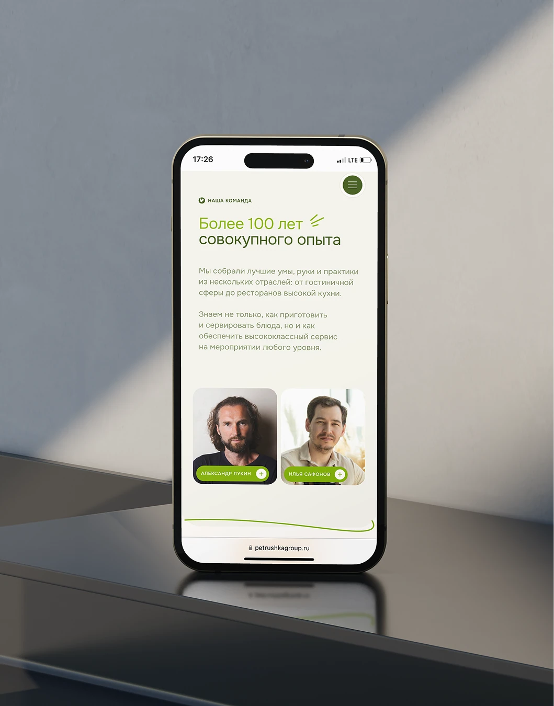
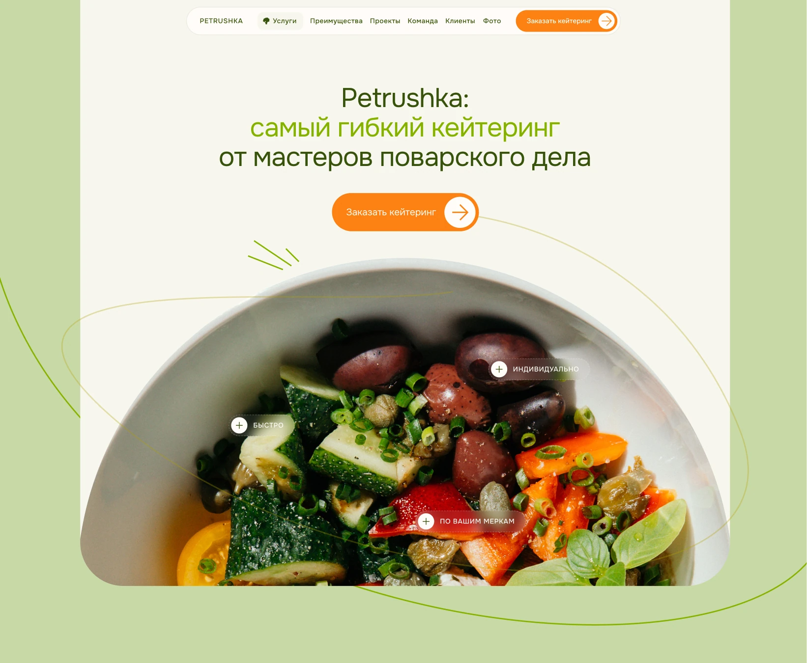
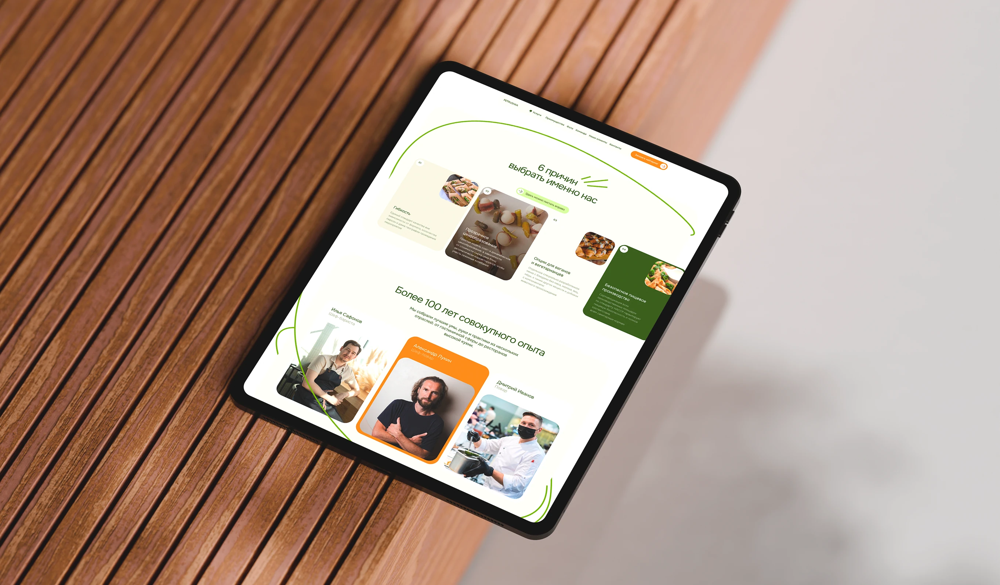
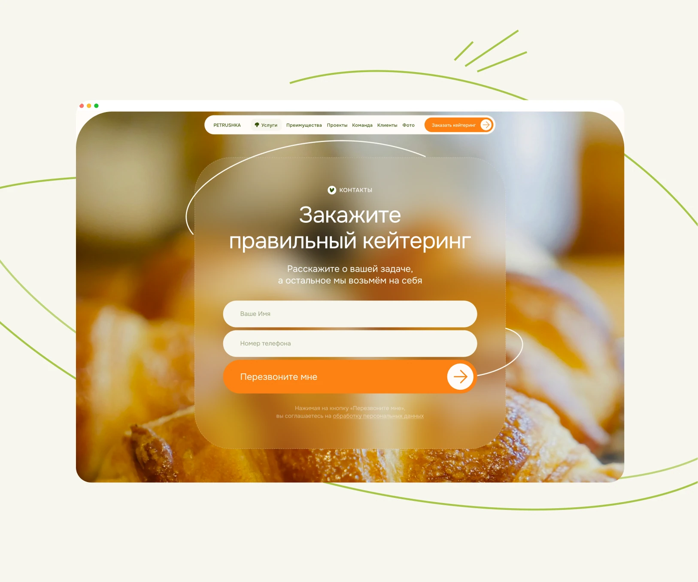
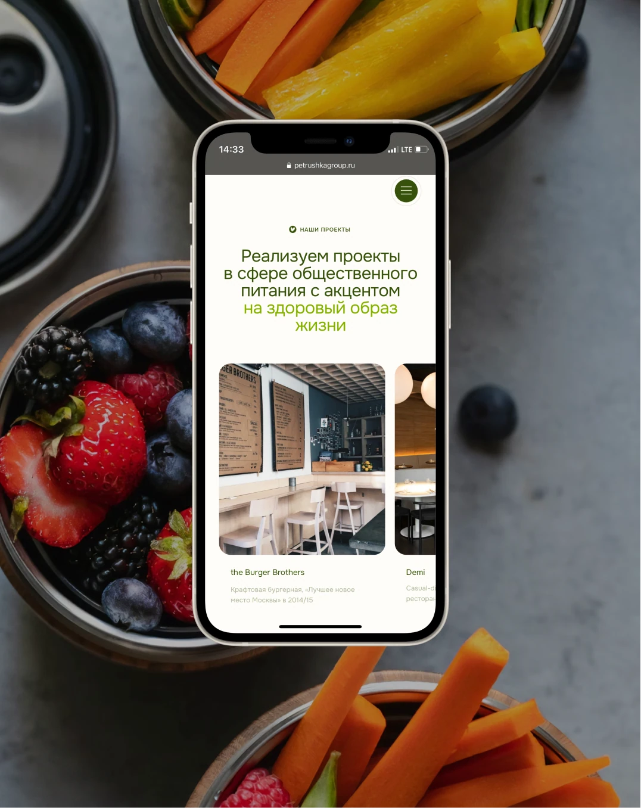

Вкусный сайт кейтеринговой компании
Кейтеринговая компания в момент слияния двух брендов. Задача — редизайн, который одновременно работает для четырех разных типов клиентов: менеджер корпоратива, HR, помощник руководителя, агент. Каждый из них принимает решение по своим критериям. Дегустаций нет, значит сам сайт должен быть вкусным.
Что дало исследование: «усредненный» сайт не отвечает запросам ни одной из четырех групп. Поэтому боли каждого сегмента мы перевели в конкретную функцию. Нужно убедить начальство — раздел с логотипами клиентов. Агенту нужно скрыть подрядчика — меню без брендинга на скачивание. Менеджеру некогда разбираться — пошаговый таймлайн сотрудничества.
Параллельно сделали презентацию в визуальном стиле сайта — она распространяется по телеграм-каналам и легко пересылается руководителю на согласование. Сайт и презентация работают в паре.
Итог: поддержка стала закрывать сделки быстрее — меньше уточняющих вопросов на этапе предпродажи. Клиенты отметили, что сайт отличается от конкурентов.
2024





